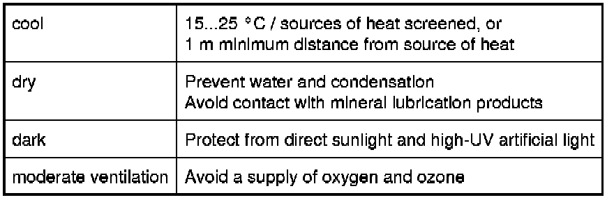
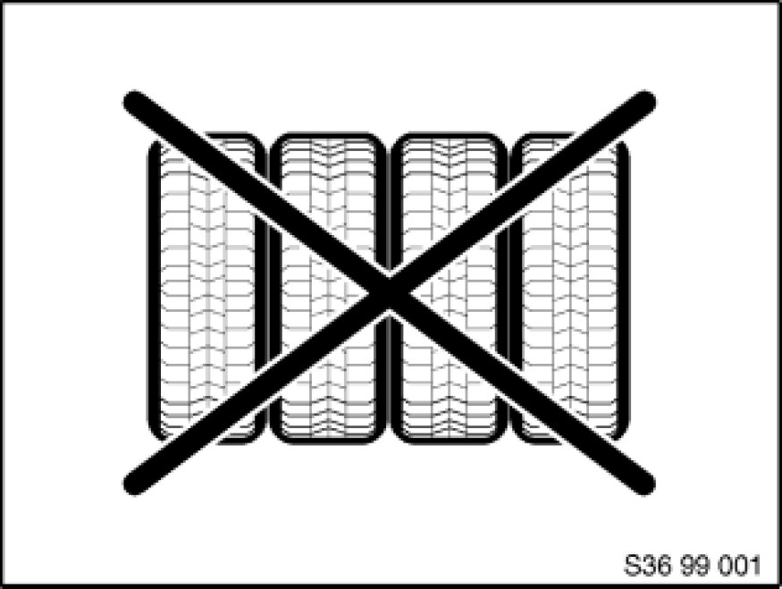
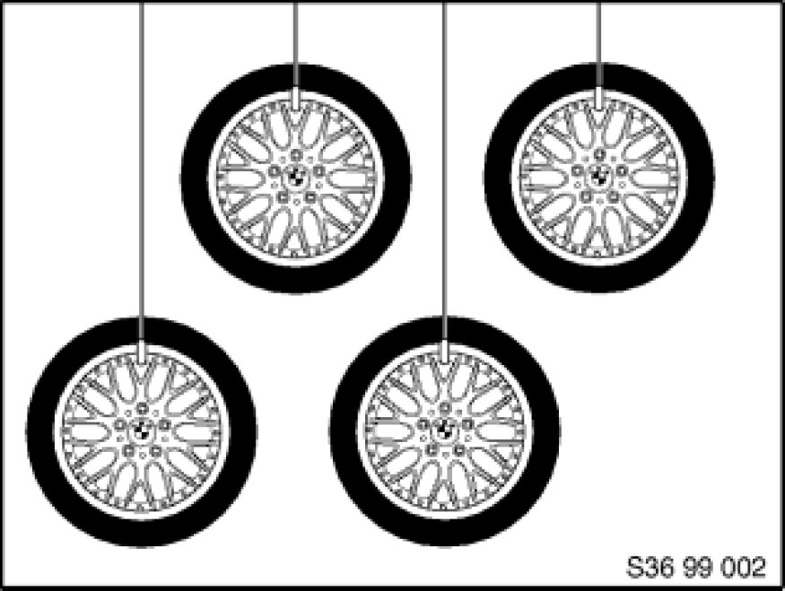
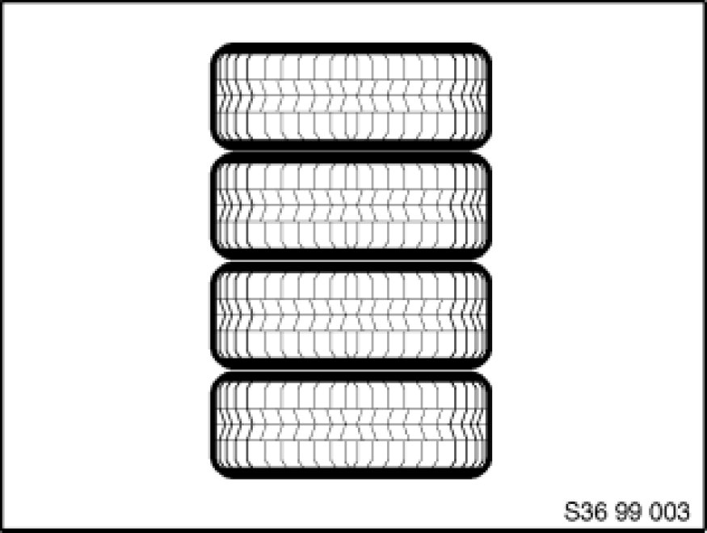
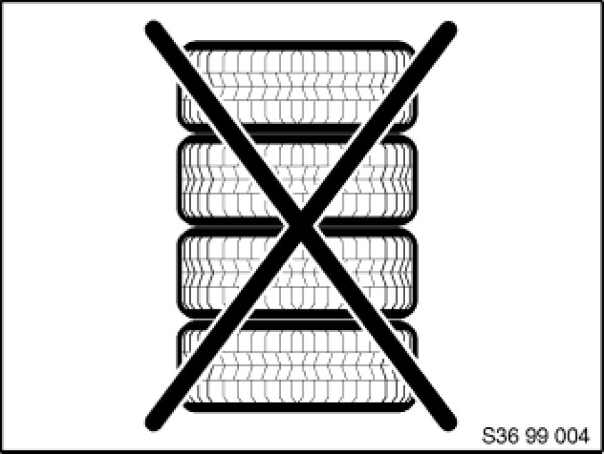
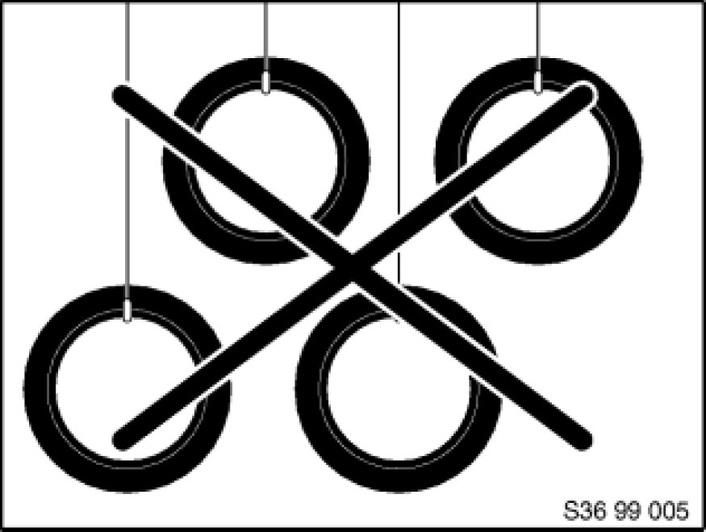
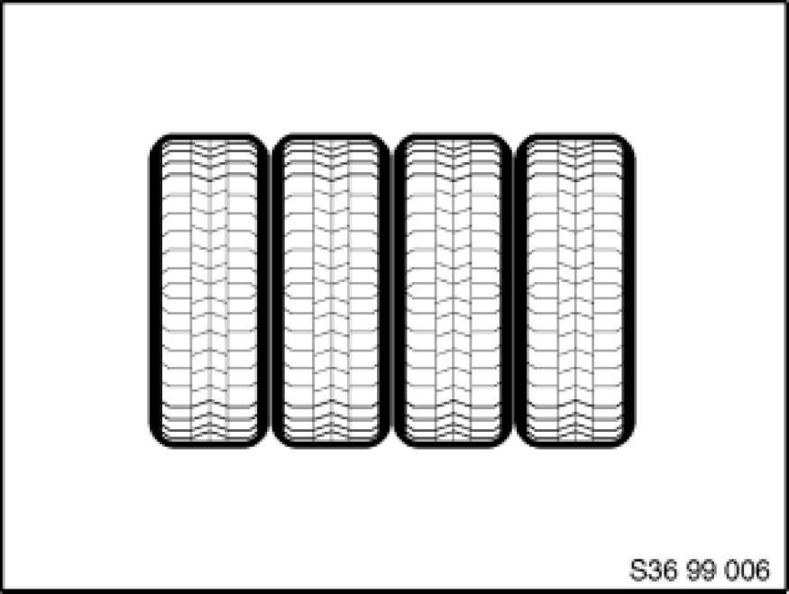

Tires: Description and Operation
36 04 99 (502)
Storing wheels and tires
all models
Wheels / tires - general notes
The service of storing a customer's wheels is one which is now almost taken for granted. For this reason, we have published this BMW Technical Service bulletin to provide a uniform storage concept, which will prevent damage being caused due to incorrect storage.
The tire's rubber will age under the influence of sunlight, heat, humidity, movements in the air and ozone, and will thus lose some of its stability and elasticity. For this reason, tires should never be stored in the open-air. If open-air storage cannot be avoided, the wheels / tires must be stored in a clean and dry condition and covered with waterproof material. It is essential that wheels / tires are protected against rain, snow and sunlight, but due to the risk of corrosion they must not be stored in tire sacks. For more information on protective covers for wheels and tires,
see SI 36 01 88 (864).
Wheels / tires with tire pressure control (RDC) must not be cleaned with high-pressure cleaning equipment. For general information on RDC, see SI 36 02 98 (377).
Storage requirements
The following requirements apply in general to storage in enclosed rooms:

In short, the storage room should be cool and dry. It is not necessary to heat the room during the winter. In the summer, the doors and windows should be kept closed to ensure that no air can circulate. In addition, the windows can also be coated with sun protection paint.
The storage room should not contain any working electric machinery, welding equipment, distribution boxes etc. as electrical sparks generate ozone which can have a serious impact on the surface of the tire (ozone cracks).
Tires should not be allowed to come into contact with oil, petrol, or other mineral lubricants as these dissolve rubber, making the tire porous.
Preparing wheels / tires
1. Before removing a wheel, mark its position on the vehicle.
2. Whenever possible, keep the tire on its wheel (complete wheels).
3. Correct the inflation pressure and recheck every 2 months.
4. Ensure that tires are stored at a sufficient distance above the ground. Wheels / tires should never be stored on the ground.
5. Complete the storage forms. These should contain the following data:
- Type and size of tire
- Condition and tread depth
- Customer's address
- Date and signature of customer
Wheel / tire storage requirements
A. Tire fitted to wheel

Do not store upright, ...
Note:
If storing the wheels upright cannot be avoided, the inflation pressure must be increased to 3.5 bar.

... but rather hang ...

... or stack.
Note:
Never store tires on the ground.
Use a wooden palette or similar.
B. Tires not fitted

Do not stack, ...

... do not hang, ...

... but rather store them upright and turn them every 4 weeks.
Note:
Never store tires on the ground.
Use commercially available shelves.